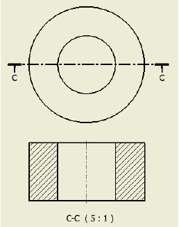
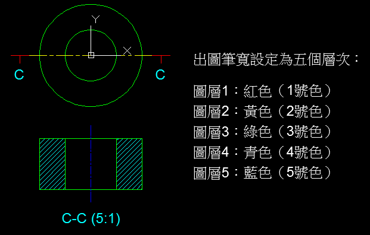

工作中常常使用「CTB」顏色相關出圖型式表，控制日後的出圖筆寬，隨時可以調整筆粗，公司可以使用這方式訂定企業出圖標準，記得提供DWG圖檔時，需要一並附上CTB檔喔！
剛好有朋友在問，在這順便做了一個簡單的教學，有興趣的朋友可以試試～


▲提供「專屬會員」影片下載：
https://www.autocad-tw.com/t14354-topic
[影片]出圖物件線粗控制-CTB圖筆
[教學]控制物件的出圖型式及線寬(筆寬)-上
[教學]控制物件的出圖型式及線寬(筆寬)-下